Compare multiple metrics on a single canvas, master multi-channel visual encoding (color, linestyle, markers), conquer scale mismatch with ax.twinx() and ax.twiny(), build unified legends, and avoid false visual correlations.
Data science mein ek isolated line plot dekhna useful hota hai, lekin asli decision-making tab hoti hai jab aap comparisons karte hain! "Product A ki sales badh rahi hai" — ye achhi baat hai, lekin jab tak aap ye nahi dekhte ki "Product B usse tezi se overtake kar raha hai" ya "Actual sales monthly quota target se 15% peeche hai", tab tak poori picture clear nahi hoti.
Ek Data Series ek specific measurement ya category ka sequence hota hai (jaise Product Alpha ki monthly revenue). Jab hum ek hi Axes par multiple series draw karte hain, toh reader ko instant visual context milta hai: trends, divergences, aur crossover points (intersections).
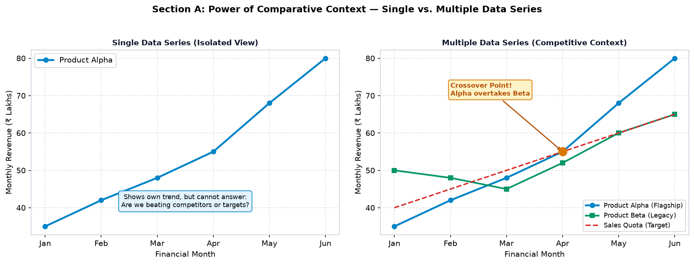
Dekhiye kaise do simple ax.plot() calls se do series aapas mein compare hoti hain:
import matplotlib.pyplot as plt
months = ['Jan', 'Feb', 'Mar', 'Apr', 'May', 'Jun']
prod_a = [35, 42, 48, 55, 68, 80]
prod_b = [50, 48, 45, 52, 60, 65]
fig, ax = plt.subplots(figsize=(8, 4.5))
# Plotting series 1: Product Alpha
ax.plot(months, prod_a, marker='o', color='#0284c7', lw=2.5, label='Product Alpha (SaaS)')
# Plotting series 2: Product Beta
ax.plot(months, prod_b, marker='s', color='#059669', lw=2.2, label='Product Beta (Legacy)')
ax.set_title("Comparative Monthly Revenue Trajectory", fontweight='bold')
ax.set_xlabel("Financial Month")
ax.set_ylabel("Revenue (₹ Lakhs)")
ax.grid(True, linestyle='--', alpha=0.4)
ax.legend(loc='upper left')
plt.show()import matplotlib.pyplot as plt
months = ['Jan', 'Feb', 'Mar', 'Apr', 'May', 'Jun']
actual_sales = [42, 49, 53, 58, 64, 71]
target_quota = [45, 50, 55, 60, 65, 70]
fig, ax = plt.subplots(figsize=(8, 4.5))
# Actual performance in solid blue
ax.plot(months, actual_sales, marker='o', color='#0284c7', lw=2.5, label='Actual Monthly Sales')
# Target line in dashed red
ax.plot(months, target_quota, color='#dc2626', lw=1.8, linestyle='--', label='Monthly Sales Target')
ax.set_title("Sales Performance vs. Target Quota 2026", fontweight='bold')
ax.set_ylabel("Sales (₹ Lakhs)")
ax.grid(True, linestyle='--', alpha=0.4)
ax.legend(loc='lower right')
plt.show()Multiple lines plot karne ke liye aapko alag-alag figures banane ki zaroorat nahi hai. Aap usi ax object par baar-baar ax.plot(x, y, label=...) call kar sakte hain.
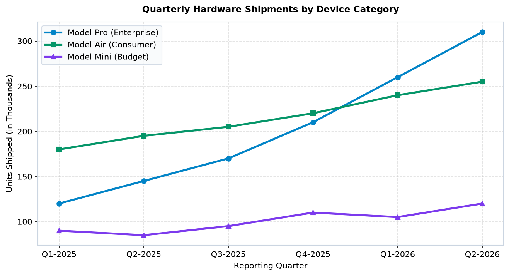
label: Har plot() call mein label='...' dena mandatory hai, varna ax.legend() blank rahega!zorder=4 set karein.y1, y2 ki jagah hamesha domain-specific names use karein jaise rev_pro, rev_air.import matplotlib.pyplot as plt
quarters = ['Q1-2025', 'Q2-2025', 'Q3-2025', 'Q4-2025', 'Q1-2026', 'Q2-2026']
device_pro = [120, 145, 170, 210, 260, 310]
device_air = [180, 195, 205, 220, 240, 255]
device_mini = [90, 85, 95, 110, 105, 120]
fig, ax = plt.subplots(figsize=(9, 5))
# 3 sequential plot calls on the same axes
ax.plot(quarters, device_pro, marker='o', lw=2.5, color='#0284c7', label='Model Pro (Enterprise)')
ax.plot(quarters, device_air, marker='s', lw=2.5, color='#059669', label='Model Air (Consumer)')
ax.plot(quarters, device_mini, marker='^', lw=2.5, color='#7c3aed', label='Model Mini (Budget)')
ax.set_title("Quarterly Hardware Shipments by Device Category", fontweight='bold')
ax.set_ylabel("Units Shipped (Thousands)")
ax.set_xlabel("Financial Quarter")
ax.grid(True, linestyle='--', alpha=0.4)
ax.legend(loc='upper left', frameon=True)
plt.show()Ek common amateur mistake: 3 ya 4 lines draw kiye aur sabko solid lines bana diya, sirf color alag-alag! Sochiye agar koi student photocopy ya black-and-white print nikalta hai, ya reader ko color-blindness (jaise red-green deficiency) hai — toh saari lines ek jaisi gray dikhengi!
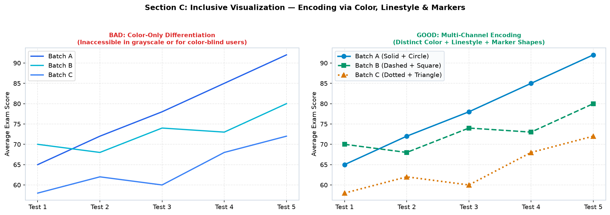
'-'), Dashed ('--'), Dotted (':'), Dash-dot ('-.').'o'), Squares ('s'), Triangles ('^'), Diamonds ('d').
import matplotlib.pyplot as plt
tests = ['Test 1', 'Test 2', 'Test 3', 'Test 4', 'Test 5']
batch_a = [65, 72, 78, 85, 92]
batch_b = [70, 68, 74, 73, 80]
batch_c = [58, 62, 60, 68, 72]
fig, ax = plt.subplots(figsize=(8, 4.8))
# Series 1: Solid + Circle + Blue
ax.plot(tests, batch_a, color='#0284c7', linestyle='-', marker='o', markersize=7, lw=2.2, label='Batch A (Solid + Circle)')
# Series 2: Dashed + Square + Green
ax.plot(tests, batch_b, color='#059669', linestyle='--', marker='s', markersize=7, lw=2.2, label='Batch B (Dashed + Square)')
# Series 3: Dotted + Triangle + Amber
ax.plot(tests, batch_c, color='#d97706', linestyle=':', marker='^', markersize=8, lw=2.4, label='Batch C (Dotted + Triangle)')
ax.set_title("Student Examination Performance across Cohorts", fontweight='bold')
ax.set_ylabel("Average Score (%)")
ax.grid(True, linestyle='--', alpha=0.35)
ax.legend(loc='upper left', frameon=True)
plt.show()Multiple series wale chart mein legend hi map hota hai jo reader ko batata hai ki kaunsi line kya represent kar rahi hai. Agar 4 ya 5 series hain, toh vertical single-column legend chart ki valuable space kha sakta hai.
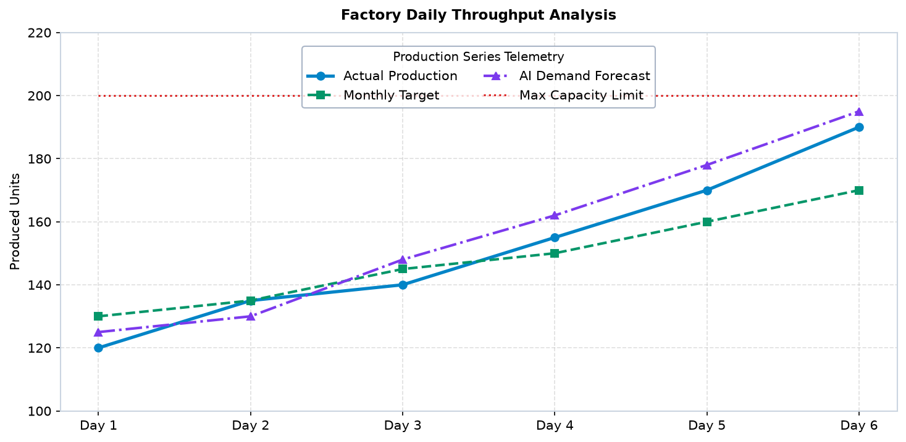
ncol=2 ya ncol=3: Legend items ko horizontal columns mein arrange karta hai, jisse vertical space bachti hai.title="Telemetry Category": Legend box ke upar ek crisp heading add karta hai.frameon=True, facecolor='#ffffff', edgecolor='#cbd5e1': Legend box ko clean white card style deta hai.bbox_to_anchor=(x, y): Legend ko plot ke exact bahar anchor karne ke liye use hota hai.import matplotlib.pyplot as plt
days = ['Mon', 'Tue', 'Wed', 'Thu', 'Fri', 'Sat']
actual = [120, 135, 140, 155, 170, 190]
target = [130, 135, 145, 150, 160, 170]
forecast = [125, 130, 148, 162, 178, 195]
capacity = [200, 200, 200, 200, 200, 200]
fig, ax = plt.subplots(figsize=(9, 5))
ax.plot(days, actual, marker='o', color='#0284c7', lw=2.2, label='Actual Output')
ax.plot(days, target, marker='s', color='#059669', lw=2.0, linestyle='--', label='Production Target')
ax.plot(days, forecast, marker='^', color='#7c3aed', lw=2.0, linestyle='-.', label='AI Demand Forecast')
ax.plot(days, capacity, color='#dc2626', lw=1.5, linestyle=':', label='Max Facility Ceiling')
ax.set_title("Factory Operations Daily Output Matrix", fontweight='bold')
ax.set_ylabel("Manufactured Units")
ax.grid(True, linestyle='--', alpha=0.35)
# 2-column legend centered neatly at the top
ax.legend(title="Manufacturing Metrics", title_fontsize='9.5', loc='upper center',
bbox_to_anchor=(0.5, 0.98), ncol=2, frameon=True)
plt.show()Jab chart mein 5, 6 ya 7 lines aa jaati hain, toh usse data visualization community mein "Spaghetti Plot" kehte hain — jaise katori mein ubla hua chowmein! Har line ek doosre ko kaat rahi hoti hai aur reader ko samajh nahi aata ki dekhna kahan hai.
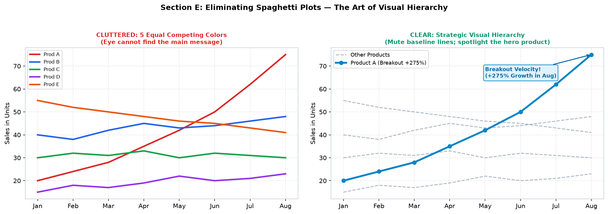
color='#94a3b8') aur patli dashed lines (lw=1.2) mein daal dein.color='#0284c7', lw=3.0) mein marker ke sath spotlight karein!import matplotlib.pyplot as plt
months = ['Jan', 'Feb', 'Mar', 'Apr', 'May', 'Jun', 'Jul', 'Aug']
p1 = [20, 24, 28, 35, 42, 50, 62, 75] # Hero product
p2 = [40, 38, 42, 45, 43, 44, 46, 48]
p3 = [30, 32, 31, 33, 30, 32, 31, 30]
p4 = [15, 18, 17, 19, 22, 20, 21, 23]
p5 = [55, 52, 50, 48, 46, 45, 43, 41]
fig, ax = plt.subplots(figsize=(9, 5))
# Baseline products in muted gray
for prod in [p2, p3, p4, p5]:
ax.plot(months, prod, lw=1.3, color='#94a3b8', linestyle='--', alpha=0.75)
# Star hero product spotlighted
ax.plot(months, p1, lw=3.0, color='#0284c7', marker='o', markersize=6, label='Product A (Breakout +275%)')
ax.annotate('Breakout Velocity!', xy=('Aug', 75), xytext=('May', 65),
arrowprops=dict(facecolor='#0284c7', edgecolor='#0369a1', arrowstyle='->', lw=1.5),
fontweight='bold', fontsize=8.5, color='#0369a1',
bbox=dict(boxstyle='round,pad=0.3', facecolor='#e0f2fe', edgecolor='#0284c7'))
ax.set_title("Product Portfolio Growth: Spotlight on Breakout Category", fontweight='bold')
ax.set_ylabel("Sales Units")
ax.grid(True, linestyle='--', alpha=0.35)
ax.legend(loc='upper left', frameon=True)
plt.show()Aksar beginners sochte hain ki do lines plot karne ke liye dono ka X-axis array exact identical hona chahiye. Ye galat hai! Agar X-axis ek continuous dimension (jaise time in hours) represent kar raha hai, toh do alag-alag sensors alag frequencies par data bhej sakte hain.
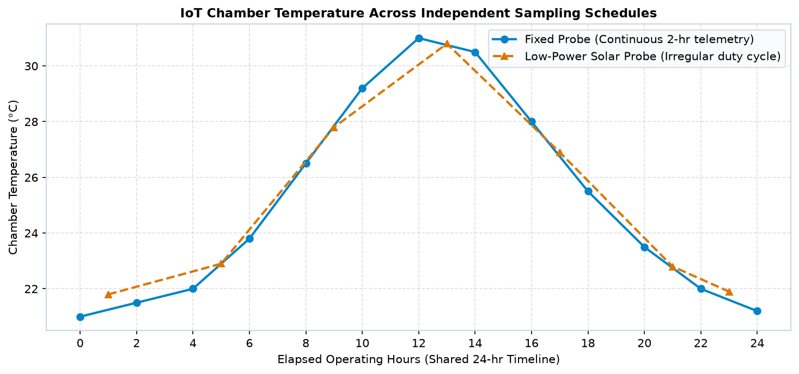
import matplotlib.pyplot as plt
# Sensor 1: Measures continuously every 2 hours
time_sensor1 = [0, 2, 4, 6, 8, 10, 12, 14, 16, 18, 20, 22, 24]
temp_sensor1 = [21.0, 21.5, 22.0, 23.8, 26.5, 29.2, 31.0, 30.5, 28.0, 25.5, 23.5, 22.0, 21.2]
# Sensor 2: Battery-saving solar probe, samples irregularly
time_sensor2 = [1, 5, 9, 13, 17, 21, 23]
temp_sensor2 = [21.8, 22.9, 27.8, 30.8, 26.9, 22.8, 21.9]
fig, ax = plt.subplots(figsize=(9, 4.8))
ax.plot(time_sensor1, temp_sensor1, marker='o', color='#0284c7', lw=2, label='Probe Alpha (Continuous 2-hr sampling)')
ax.plot(time_sensor2, temp_sensor2, marker='^', color='#d97706', lw=2, linestyle='--', label='Probe Beta (Solar duty cycle)')
ax.set_title("Environmental Temperature Across Asynchronous Sensors", fontweight='bold')
ax.set_xlabel("Elapsed Operating Hours (24-Hour Cycle)")
ax.set_ylabel("Temperature (°C)")
ax.set_xticks(range(0, 25, 2))
ax.grid(True, linestyle='--', alpha=0.4)
ax.legend(loc='upper right')
plt.show()Sochiye aapko do metrics compare karni hain:
1. Website Visitors: 5,000 se 12,000 visitors per day.
2. Conversion Rate: 2.0% se 4.5%.
Agar aap in dono ko bina soche ek hi Y-axis par plot kar denge, toh Y-axis ka scale 0 se 12,000 tak expand ho jayega. Nateeja? Conversion rate ki line 0 ke floor par ekdum dead flat line ban jayegi! Reader ko lagega conversion zero ho gaya!
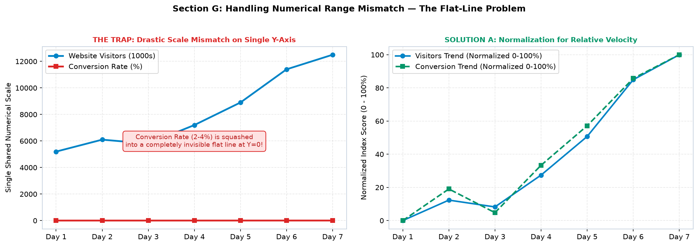
sharex=True: Dono metrics ko upar-neeche do alag panels mein draw karein. Zero ambiguity!ax.twinx(): Left side par Visitors ka scale aur Right side par Conversion % ka scale attach karein!Twin Axes ka matlab hota hai: ek hi plotting area (canvas) ke andar do independent coordinate axes ka coexist karna. twinx() ek naya Axes create karta hai jo existing Axes ka X-axis share karta hai, lekin uske paas apna independent Y-axis hota hai right side par.
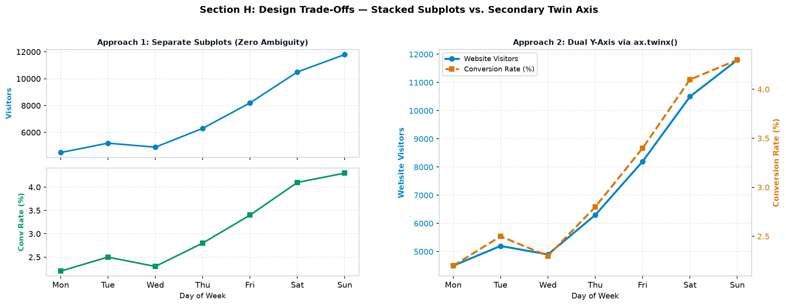
ylim limits kya hain! Kabhi bhi do alag units (jaise ₹ Lakhs aur % Conversion) ke cross point ko 'break-even' mat samjhein!
| Criteria | Separate Stacked Subplots | Twin Axes (ax.twinx) |
|---|---|---|
| Unit clarity | ⭐⭐⭐⭐⭐ Highest (Zero confusion) | ⭐⭐⭐ Requires careful color-coding |
| Compactness | Requires taller figure (e.g. 8x8) | ⭐⭐⭐⭐⭐ Highly compact (single panel) |
| Direct Correlation | Eye travels between panels | ⭐⭐⭐⭐⭐ Immediate shape alignment |
| Mobile Screen fit | Easy vertical scrolling | Needs clear font sizes to avoid clutter |
Chaliye ax.twinx() ko step-by-step master karte hain:
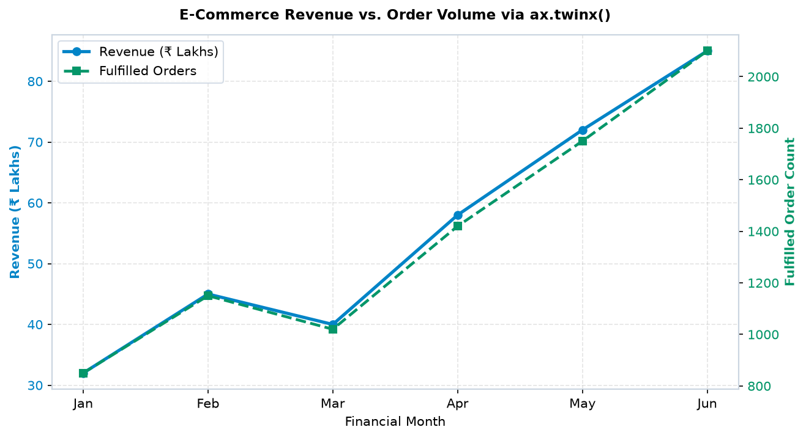
fig, ax1 = plt.subplots(figsize=(9, 5))ax1: Left Y-axis label aur tick colors ko line ke color se match karein.ax2 = ax1.twinx()ax2: Right Y-axis label aur ticks ko secondary line ke color se match karein!import matplotlib.pyplot as plt
months = ['Jan', 'Feb', 'Mar', 'Apr', 'May', 'Jun']
rev_lakhs = [32, 45, 40, 58, 72, 85]
orders = [850, 1150, 1020, 1420, 1750, 2100]
fig, ax1 = plt.subplots(figsize=(8.5, 4.8))
# 1. Primary Y-axis (Revenue)
color1 = '#0284c7'
line1 = ax1.plot(months, rev_lakhs, marker='o', color=color1, lw=2.5, label='Revenue (₹ Lakhs)')
ax1.set_xlabel("Financial Month")
ax1.set_ylabel("Revenue (₹ Lakhs)", color=color1, fontweight='bold')
ax1.tick_params(axis='y', labelcolor=color1)
ax1.grid(True, linestyle='--', alpha=0.35)
# 2. Spawn Secondary Y-axis (Orders)
ax2 = ax1.twinx()
color2 = '#059669'
line2 = ax2.plot(months, orders, marker='s', color=color2, lw=2.2, linestyle='--', label='Orders Fulfilled')
ax2.set_ylabel("Fulfilled Order Count", color=color2, fontweight='bold')
ax2.tick_params(axis='y', labelcolor=color2)
# 3. Combine legends from both axes!
lines = line1 + line2
labels = [l.get_label() for l in lines]
ax1.legend(lines, labels, loc='upper left')
ax1.set_title("E-Commerce Revenue & Order Volume Synchronization", fontweight='bold')
fig.tight_layout()
plt.show()Jab aap do alag Axes (ax1 aur ax2) use karte hain, toh ek bada catch hota hai: ax1.legend() ko ax2 ke baare mein kuch nahi pata hota! Agar aap seedha ax1.legend() call karenge, toh sirf pehli line legend mein aayegi, doosri gayab ho jayegi!
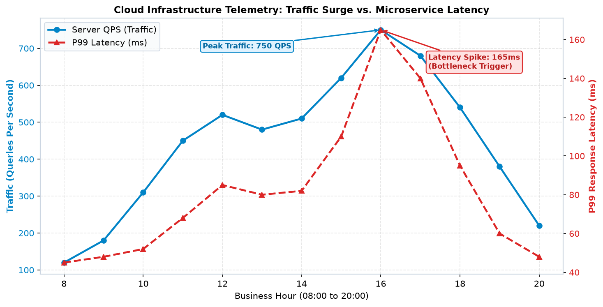
lines = line1 + line2labels = [l.get_label() for l in lines]ax1.legend(lines, labels, loc='upper left')
import matplotlib.pyplot as plt
import numpy as np
hours = np.arange(8, 21)
traffic = [120, 180, 310, 450, 520, 480, 510, 620, 750, 680, 540, 380, 220]
latency = [45, 48, 52, 68, 85, 80, 82, 110, 165, 140, 95, 60, 48]
fig, ax1 = plt.subplots(figsize=(9.5, 5))
c1, c2 = '#0284c7', '#dc2626'
l1 = ax1.plot(hours, traffic, marker='o', color=c1, lw=2.2, label='Server QPS')
ax1.set_xlabel("Business Hour (08:00 to 20:00)")
ax1.set_ylabel("Traffic (QPS)", color=c1, fontweight='bold')
ax1.tick_params(axis='y', labelcolor=c1)
ax1.grid(True, linestyle='--', alpha=0.35)
ax2 = ax1.twinx()
l2 = ax2.plot(hours, latency, marker='^', color=c2, lw=2.2, linestyle='--', label='P99 Latency (ms)')
ax2.set_ylabel("P99 Response Latency (ms)", color=c2, fontweight='bold')
ax2.tick_params(axis='y', labelcolor=c2)
# Consolidated legend
lines = l1 + l2
labels = [l.get_label() for l in lines]
ax1.legend(lines, labels, loc='upper left', frameon=True)
# Color-coded targeted callouts
ax1.annotate('Peak: 750 QPS', xy=(16, 750), xytext=(11.5, 700),
arrowprops=dict(facecolor=c1, edgecolor=c1, arrowstyle='->', lw=1.5),
fontweight='bold', color='#0369a1')
ax2.annotate('Latency Spike: 165ms', xy=(16, 165), xytext=(17.2, 145),
arrowprops=dict(facecolor=c2, edgecolor=c2, arrowstyle='->', lw=1.5),
fontweight='bold', color='#b91c1c')
ax1.set_title("Cloud Microservice Telemetry: Traffic vs. Latency", fontweight='bold')
fig.tight_layout()
plt.show()Jaise twinx() Y-axis ko duplicate karta hai, vaise hi ax.twiny() ek secondary X-axis create karta hai jo top of the chart par render hota hai. Ye tab use hota hai jab X-axis ke do equivalent units ya alternate representations hote hain (jaise Temperature in Celsius & Fahrenheit, ya Elapsed Time in Seconds & Minutes).
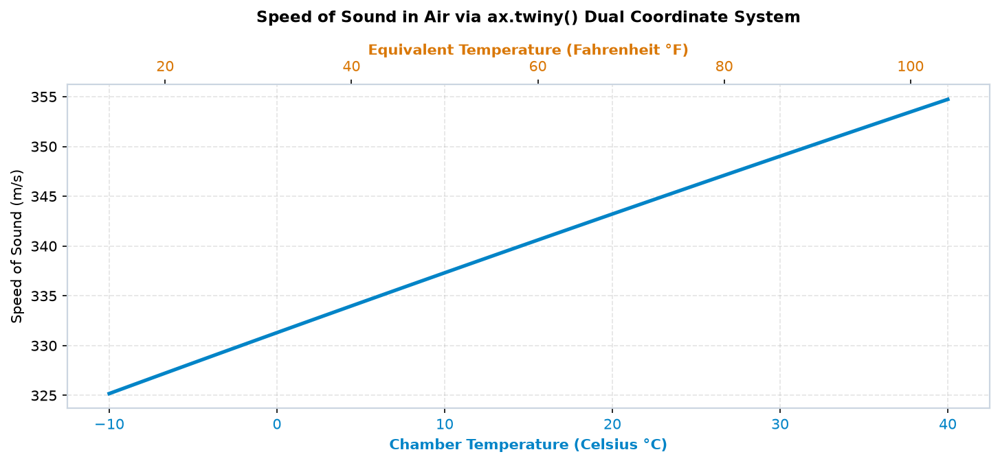
import matplotlib.pyplot as plt
import numpy as np
temp_c = np.linspace(-10, 40, 60)
speed_sound = 331.3 * np.sqrt(1 + temp_c / 273.15)
fig, ax1 = plt.subplots(figsize=(9, 4.5))
# Bottom X-axis: Celsius
color_c = '#0284c7'
ax1.plot(temp_c, speed_sound, color=color_c, lw=2.5)
ax1.set_xlabel("Chamber Temperature (Celsius °C)", color=color_c, fontweight='bold')
ax1.set_ylabel("Speed of Sound (m/s)")
ax1.tick_params(axis='x', labelcolor=color_c)
ax1.grid(True, linestyle='--', alpha=0.35)
# Top X-axis: Fahrenheit
ax2 = ax1.twiny()
# Synchronize limits: F = C * 9/5 + 32
ax2.set_xlim(ax1.get_xlim()[0] * 9/5 + 32, ax1.get_xlim()[1] * 9/5 + 32)
color_f = '#d97706'
ax2.set_xlabel("Equivalent Temperature (Fahrenheit °F)", color=color_f, fontweight='bold')
ax2.tick_params(axis='x', labelcolor=color_f)
ax1.set_title("Acoustic Physics: Speed of Sound vs. Temperature", fontweight='bold', pad=15)
fig.tight_layout()
plt.show()Jab aapke paas multiple time-series datasets hote hain, toh kaunsa visual design pick karein? Ye simple decision flowchart follow karein:
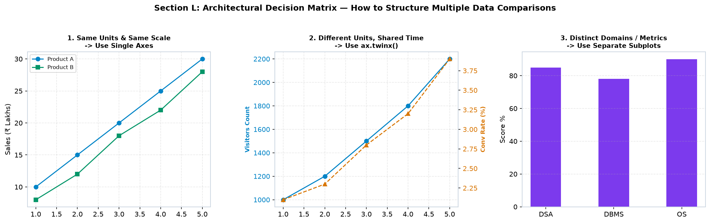
ax.twinx() with distinct color-coding.sharex=True!
Scenario: Executive board meeting ke liye 8-month multi-product trajectory taiyar karein: Flagship Cloud SaaS, Legacy On-Premises revenue, board target quota, aur May crossover event ka crisp visual highlight.
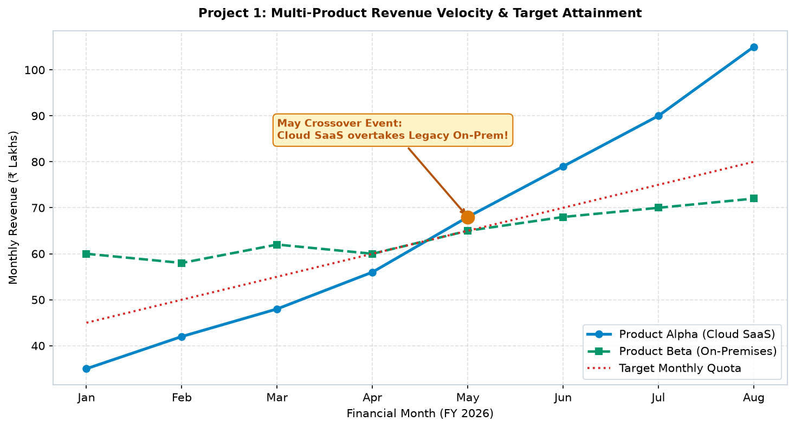
import matplotlib.pyplot as plt
months = ['Jan', 'Feb', 'Mar', 'Apr', 'May', 'Jun', 'Jul', 'Aug']
product_a = [35, 42, 48, 56, 68, 79, 90, 105] # Cloud SaaS
product_b = [60, 58, 62, 60, 65, 68, 70, 72] # On-Prem
target = [45, 50, 55, 60, 65, 70, 75, 80] # Target
fig, ax = plt.subplots(figsize=(9.5, 5))
ax.plot(months, product_a, marker='o', color='#0284c7', lw=2.5, label='Product Alpha (Cloud SaaS)')
ax.plot(months, product_b, marker='s', color='#059669', lw=2.2, linestyle='--', label='Product Beta (On-Premises)')
ax.plot(months, target, color='#dc2626', lw=1.8, linestyle=':', label='Target Monthly Quota')
# Crossover Annotation
ax.scatter(['May'], [68], color='#d97706', s=130, zorder=5)
ax.annotate('May Crossover Event: Cloud SaaS overtakes Legacy On-Prem!',
xy=('May', 68), xytext=('Mar', 85),
arrowprops=dict(facecolor='#d97706', edgecolor='#b45309', arrowstyle='->', lw=1.8),
fontweight='bold', fontsize=9, color='#b45309',
bbox=dict(boxstyle='round,pad=0.4', facecolor='#fef3c7', edgecolor='#d97706'))
ax.set_title("Project 1: Multi-Product Revenue Velocity & Target Attainment", fontweight='bold')
ax.set_ylabel("Monthly Revenue (₹ Lakhs)")
ax.set_xlabel("Financial Month (FY 2026)")
ax.grid(True, linestyle='--', alpha=0.4)
ax.legend(loc='lower right', frameon=True)
fig.tight_layout()
plt.show()Scenario: E-commerce marketing lead ke liye daily website visitors aur conversion percentage ka 2-panel comparative analysis: Panel 1 shows volume bar distribution, Panel 2 showcases synchronized twin-axis velocity.
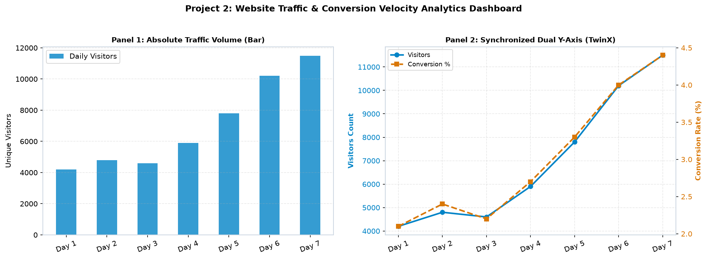
import matplotlib.pyplot as plt
days = ['Day 1', 'Day 2', 'Day 3', 'Day 4', 'Day 5', 'Day 6', 'Day 7']
visitors = [4200, 4800, 4600, 5900, 7800, 10200, 11500]
conv_rate = [2.1, 2.4, 2.2, 2.7, 3.3, 4.0, 4.4]
fig, (ax1, ax2) = plt.subplots(1, 2, figsize=(13, 5))
# Panel 1: Bar chart volume
ax1.bar(days, visitors, color='#0284c7', alpha=0.8, width=0.5, label='Daily Visitors')
ax1.set_title("Panel 1: Absolute Traffic Volume", fontweight='bold')
ax1.set_ylabel("Unique Visitors")
ax1.grid(True, linestyle='--', alpha=0.3, axis='y')
ax1.legend(loc='upper left')
ax1.tick_params(axis='x', rotation=20)
# Panel 2: TwinX synchronization
ax_twin = ax2.twinx()
l1 = ax2.plot(days, visitors, marker='o', color='#0284c7', lw=2.2, label='Visitors')
ax2.set_ylabel("Visitors Count", color='#0284c7', fontweight='bold')
ax2.tick_params(axis='y', labelcolor='#0284c7')
ax2.grid(True, linestyle='--', alpha=0.3)
l2 = ax_twin.plot(days, conv_rate, marker='s', color='#d97706', lw=2.2, linestyle='--', label='Conversion %')
ax_twin.set_ylabel("Conversion Rate (%)", color='#d97706', fontweight='bold')
ax_twin.tick_params(axis='y', labelcolor='#d97706')
lines = l1 + l2
labels = [l.get_label() for l in lines]
ax2.legend(lines, labels, loc='upper left')
ax2.set_title("Panel 2: Synchronized Dual Y-Axis (TwinX)", fontweight='bold')
ax2.tick_params(axis='x', rotation=20)
fig.suptitle("Project 2: Website Traffic & Conversion Velocity Dashboard", fontsize=12, fontweight='bold')
fig.tight_layout(pad=2.0)
plt.show()Scenario: Climate testing chamber ke 24-ghante ke industrial cycle ka real-time telemetry dashboard jisme temperature, humidity, aur safe warning threshold (26°C) ka combined monitoring ho.
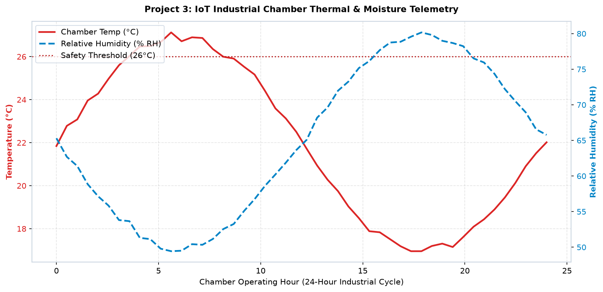
import matplotlib.pyplot as plt
import numpy as np
hours = np.linspace(0, 24, 48)
temp = 22.0 + 5.0 * np.sin(np.pi * hours / 12) + np.random.normal(0, 0.15, len(hours))
humidity = 65.0 - 15.0 * np.sin(np.pi * hours / 12) + np.random.normal(0, 0.4, len(hours))
fig, ax1 = plt.subplots(figsize=(10, 5))
c1, c2 = '#dc2626', '#0284c7'
line1 = ax1.plot(hours, temp, color=c1, lw=2.2, label='Chamber Temperature (°C)')
ax1.set_xlabel("Chamber Operating Hour (24-Hour Industrial Cycle)")
ax1.set_ylabel("Temperature (°C)", color=c1, fontweight='bold')
ax1.tick_params(axis='y', labelcolor=c1)
ax1.grid(True, linestyle='--', alpha=0.35)
ax2 = ax1.twinx()
line2 = ax2.plot(hours, humidity, color=c2, lw=2.2, linestyle='--', label='Relative Humidity (% RH)')
ax2.set_ylabel("Relative Humidity (% RH)", color=c2, fontweight='bold')
ax2.tick_params(axis='y', labelcolor=c2)
# Safety threshold
thresh = ax1.axhline(26.0, color='#b91c1c', linestyle=':', lw=1.5, label='Safety Limit (26°C)')
# Combined legend with custom artists
lines = line1 + line2 + [thresh]
labels = [l.get_label() for l in lines]
ax1.legend(lines, labels, loc='upper left', frameon=True)
ax1.set_title("Project 3: IoT Industrial Chamber Thermal & Moisture Telemetry", fontweight='bold')
fig.tight_layout()
plt.show()Twin axes aur multiple data series mein sabse zyada aane wale bugs aur unka instant fix:
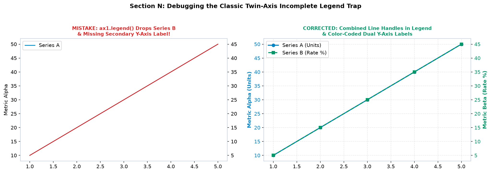
| Trap / Bug | Kyun Aata Hai? (Root Cause) | Instant Production Fix |
|---|---|---|
| Incomplete Legend | ax1.legend() sirf ax1 ki lines ko scan karta hai, ax2 ko ignore kar deta hai. |
Lines ko combine karein: lines = l1 + l2; ax1.legend(lines, [l.get_label() for l in lines]). |
| Missing Secondary Y-Label | Developer ax2.set_ylabel() lagana bhool gaya. Reader units nahi samajh pata. |
Always label both axes: ax2.set_ylabel("Conversion %", color='green'). |
| Grid Lines Collision | Dono axes (ax1 aur ax2) par grid lagane se lines criss-cross ho jati hain. |
Sirf primary axis par grid on rakhein: ax1.grid(True), ax2.grid(False). |
| False Crossover Illusion | Reader samajhta hai ki do alag units ki lines jahan milti hain wo koi magic break-even point hai. | Explain in caption ki intersection arbitrary hai aur axis scaling par depend karta hai. |
Multiple series aur twin axes wale charts ko PNG ke roop mein save karte waqt ye 3 rules zaroor follow karein:
import matplotlib.pyplot as plt
fig, ax1 = plt.subplots(figsize=(10, 5))
# ... plot ax1 and ax2 ...
# 1. High DPI for crisp lines and readable dual tick marks
# 2. bbox_inches='tight' so secondary Y-axis label on right is never clipped!
fig.savefig("assets/telemetry_export.png", dpi=150, bbox_inches="tight", pad_inches=0.12)
plt.close(fig)| Function / Method | Primary Purpose | Code Snippet |
|---|---|---|
ax.plot(x, y, label=...) |
Plots a single data series with label | ax.plot(months, sales, label='SaaS') |
ax.twinx() |
Creates secondary Y-axis sharing X-axis | ax2 = ax1.twinx() |
ax.twiny() |
Creates secondary X-axis sharing Y-axis | ax2 = ax1.twiny() |
ax.tick_params(axis='y', labelcolor=...) |
Color-codes Y-ticks to match series color | ax2.tick_params(axis='y', labelcolor='#059669') |
lines = l1 + l2 |
Combines line artists across twin axes | ax1.legend(lines, [l.get_label() for l in lines]) |
ax.plot() call karna hota haiplt.double() call karna hota haiax.twinx() kaunsi axis ko share karta hai?ax.twiny() kahan par render hota hai?ax1 aur ax2 dono par lines plotted hain, toh ax1.legend() call karne par kya hota hai?ax1 ki lines aati hain, ax2 ki drop ho jaati haintight_layout() onlybbox_inches='tight' in savefig()transparent=Truedpi=72linestyle='-', '--', ':' with markers 'o', 's', '^'.
ax.twinx() use karke Temperature aur Relative Humidity plot karein aur dono lines ka ek single combined legend top-right mein display karein.lines = l1 + l2; labels = [l.get_label() for l in lines]; ax1.legend(lines, labels).
color='#94a3b8', then plot hero product last.
twiny() se Fahrenheit scale par synchronized ho.ax2 = ax1.twiny(); ax2.set_xlim(c_min*9/5 + 32, c_max*9/5 + 32).
norm = (val - min) / (max - min) * 100.
imshow), contour plots, aur customized multi-scale colorbars mein convert karna!